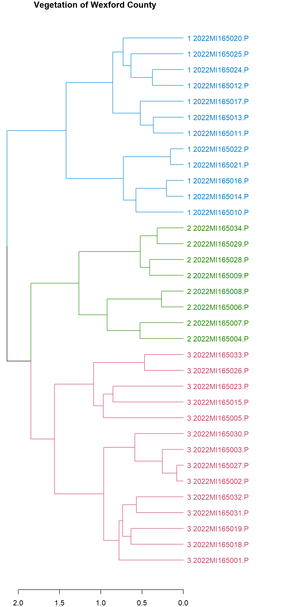
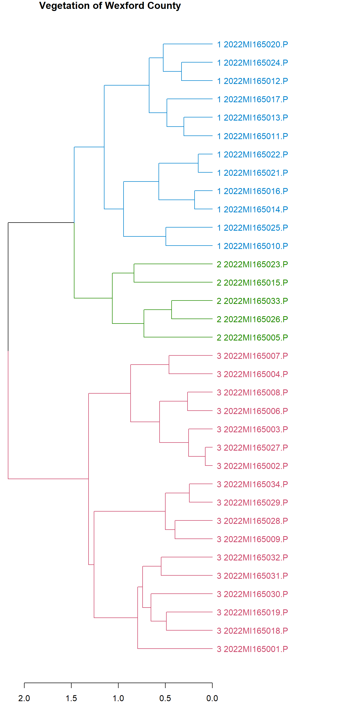
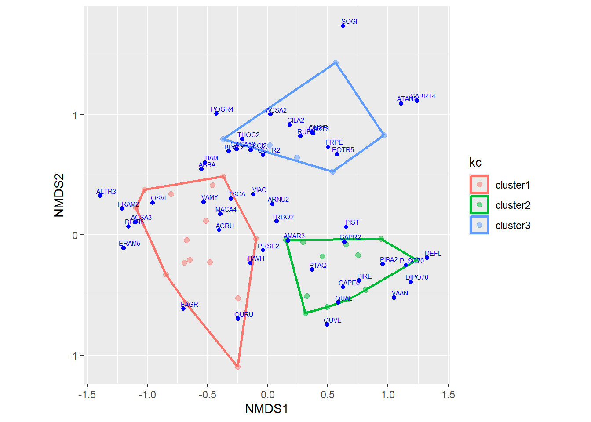
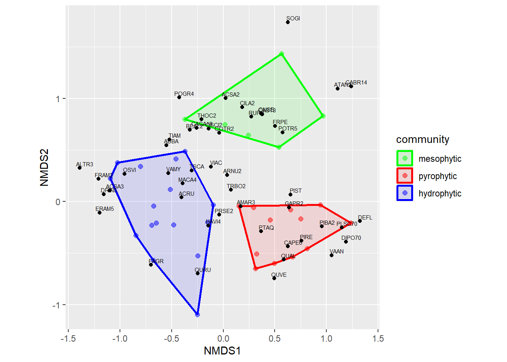
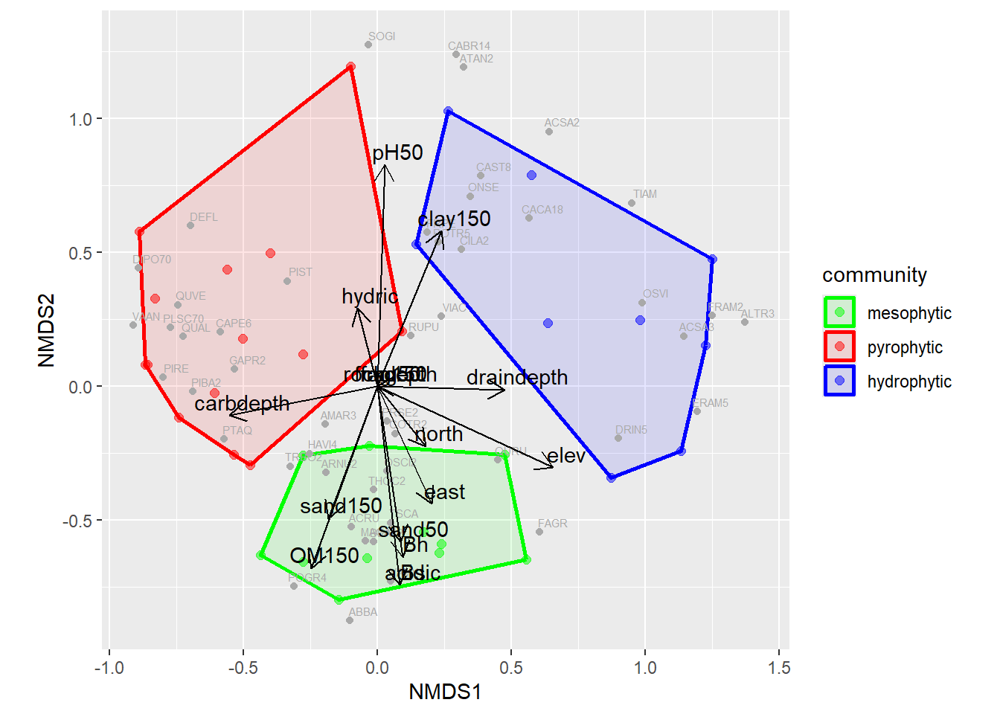

Chapter 8 Composition
This analysis using vegnasis package explores vegetation composition.
8.1 Data Processing
# remotes::install_github("phytoclast/vegnasis", dependencies = FALSE)
library(vegnasis)
library(ggplot2)
veg.raw <- vegnasis::nasis.veg
# With a connection to NASIS via soilDB...
# veg.raw <- soilDB::get_vegplot_species_from_NASIS_db()
#Clean data
veg <- clean.veg(veg.raw)
#Select only Wexford County Michigan records, and exclude imprecise non binomial (genus or family) records by requiring a blank space in the name.
veg <- veg |> subset(grepl('MI165',plot) & grepl('[[:blank:]]',taxon))
#These tasks fill in missing plant 'types' and establishes the crown heights based on user inputs of stratum, live canopy heights, and taxon norms when user data is missing.
veg <- veg |> fill.type.df() |> fill.hts.df()
options(knitr.kable.NA = '...')
knitr::kable(
head(veg, 10), row.names = FALSE, booktabs = TRUE,
caption = 'A table of the first 10 rows of the veg data.'
) |> kableExtra::column_spec(5,italic=T) |> kableExtra::scroll_box(width = "100%")|>
kableExtra::kable_classic(full_width = F, html_font = "Cambria", position = "left")| plot | label | date | symbol | taxon | type | nativity | cover | stratum.min | stratum.max | crown.min | crown.max | dbh.min | dbh.max | BA | ht.min | ht.max | taxon.max | stand.max |
|---|---|---|---|---|---|---|---|---|---|---|---|---|---|---|---|---|---|---|
| 2022MI165020.P | … | 2022-08-12 | VAAN | Vaccinium angustifolium | shrub/vine | native | 7.0 | 0.0 | 0.5 | … | 0.3 | … | … | … | 0.1 | 0.3 | 0.5 | 30 |
| 2022MI165020.P | … | 2022-08-12 | QURU | Quercus rubra | tree | native | 5.0 | 15.0 | 30.0 | 5 | 20.0 | … | … | … | 5.0 | 20.0 | 35.0 | 30 |
| 2022MI165020.P | … | 2022-08-12 | QUAL | Quercus alba | tree | native | 0.2 | 0.5 | 5.0 | … | 0.8 | … | … | … | 0.4 | 0.8 | 35.0 | 30 |
| 2022MI165020.P | … | 2022-08-12 | QUAL | Quercus alba | tree | native | 1.0 | 0.0 | 0.5 | … | … | … | … | … | 0.2 | 0.5 | 35.0 | 30 |
| 2022MI165020.P | … | 2022-08-12 | PTAQ | Pteridium aquilinum | forb | native | 75.0 | 0.0 | 0.5 | … | 1.0 | … | … | … | 0.5 | 1.0 | 2.0 | 30 |
| 2022MI165020.P | … | 2022-08-12 | PRSE2 | Prunus serotina | tree | native | 1.0 | 5.0 | 15.0 | … | 6.0 | … | … | … | 3.0 | 6.0 | 35.0 | 30 |
| 2022MI165020.P | … | 2022-08-12 | PRSE2 | Prunus serotina | tree | native | 0.2 | 0.0 | 0.5 | … | … | … | … | … | 0.2 | 0.5 | 35.0 | 30 |
| 2022MI165020.P | … | 2022-08-12 | PLSC70 | Pleurozium schreberi | moss | native | 90.0 | 0.0 | 0.5 | … | 0.0 | … | … | … | 0.0 | 0.0 | 0.0 | 30 |
| 2022MI165020.P | … | 2022-08-12 | PIBA2 | Pinus banksiana | tree | native | 56.0 | 15.0 | 30.0 | 8 | 17.0 | 16 | 22 | 23 | 8.0 | 17.0 | 25.0 | 30 |
| 2022MI165020.P | … | 2022-08-12 | PIBA2 | Pinus banksiana | tree | native | 9.0 | 5.0 | 15.0 | … | … | … | … | … | 7.5 | 15.0 | 25.0 | 30 |
8.2 Harmonizing Taxa
When combining data from multiple sources, the possibility exists that the ecologist used a different scientific name for a taxon. Before conducting cluster analysis, it is wise to harmonize the taxonomy.
harmonize.taxa()
- This function synonymizes taxa with BONAP or for Mexican only plants, Kew’s Plants of the World Online circa 2022, and returns a binomial. Assuming that the ecologist has the correct concept for the plant while in the field, and is using a legitimate name for that concept, the name can be synonymized. This ensures that various vegetation summarizing functions work off a shared taxonomic backbone, and not misconstrue synonyms as plant diversity.
8.3 Associations
#This function ranks each taxon by cover and retains the top 2-5 taxa, with fewer taxa retained with greater unequal dominance. Taxa are separated by '/' when different stratum, and '-' when in the same stratum.
veg.associations <- veg |> get.assoc()
knitr::kable(
veg.associations, booktabs = TRUE,
caption = 'A table with the top 2-5 taxa organized by stratum of each plot.'
) |>
kableExtra::kable_styling(full_width = F)| plot | association |
|---|---|
| 2022MI165001.P | Populus grandidentata/Pteridium aquilinum |
| 2022MI165002.P | Acer rubrum/Fagus grandifolia |
| 2022MI165003.P | Acer rubrum/Fagus grandifolia |
| 2022MI165004.P | Quercus rubra/Fagus grandifolia/Pteridium aquilinum |
| 2022MI165005.P | Populus tremuloides/Carex bromoides-Athyrium angustum |
| 2022MI165006.P | Acer saccharum/Fagus grandifolia/Erythronium americanum |
| 2022MI165007.P | Quercus rubra-Tsuga canadensis/Acer rubrum/Ostrya virginiana |
| 2022MI165008.P | Fagus grandifolia-Acer saccharum/Erythronium americanum |
| 2022MI165009.P | Acer saccharum/Allium tricoccum |
| 2022MI165010.P | Pinus resinosa/Deschampsia flexuosa-Vaccinium angustifolium/Dicranum polysetum-Pleurozium schreberi |
| 2022MI165011.P | Quercus velutina/Carex pensylvanica |
| 2022MI165012.P | Quercus alba/Pinus strobus/Carex pensylvanica-Pteridium aquilinum-Gaultheria procumbens |
| 2022MI165013.P | Quercus alba/Pteridium aquilinum |
| 2022MI165014.P | Pinus resinosa/Vaccinium angustifolium-Pteridium aquilinum |
| 2022MI165015.P | Pinus strobus/Solidago gigantea-Maianthemum stellatum |
| 2022MI165016.P | Pinus resinosa/Quercus alba/Vaccinium angustifolium-Pteridium aquilinum |
| 2022MI165017.P | Pinus resinosa-Pinus strobus/Carex pensylvanica-Pteridium aquilinum |
| 2022MI165018.P | Acer rubrum-Quercus alba/Hamamelis virginiana-Prunus serotina/Pteridium aquilinum |
| 2022MI165019.P | Acer rubrum-Quercus rubra/Fagus grandifolia/Amelanchier arborea/Pteridium aquilinum-Carex pensylvanica-Maianthemum canadense |
| 2022MI165020.P | Pinus banksiana/Pteridium aquilinum-Carex pensylvanica/Pleurozium schreberi |
| 2022MI165021.P | Pinus resinosa/Pteridium aquilinum |
| 2022MI165022.P | Pinus resinosa/Pteridium aquilinum |
| 2022MI165023.P | Pinus strobus-Acer rubrum-Tsuga canadensis/Dryopteris carthusiana-Glyceria striata-Solidago gigantea-Coptis trifolia |
| 2022MI165024.P | Acer rubrum-Quercus rubra/Pinus strobus/Carex pensylvanica |
| 2022MI165025.P | Pinus strobus/Fagus grandifolia/Deschampsia flexuosa-Carex pensylvanica |
| 2022MI165026.P | Acer rubrum/Prunus serotina/Carpinus caroliniana-Quercus alba/Carex stricta |
| 2022MI165027.P | Acer rubrum/Fagus grandifolia |
| 2022MI165028.P | Acer saccharum-Tilia americana |
| 2022MI165029.P | Acer saccharum/Ostrya virginiana |
| 2022MI165030.P | Acer rubrum/Pteridium aquilinum |
| 2022MI165031.P | Acer rubrum/Thuja occidentalis/Alnus incana/Vaccinium myrtilloides |
| 2022MI165032.P | Acer rubrum-Tsuga canadensis |
| 2022MI165033.P | Tilia americana/Acer saccharinum/Carpinus caroliniana/Carex stricta |
| 2022MI165034.P | Acer saccharum/Carpinus caroliniana |
8.4 Cluster Analysis
#Create plot matrix, based log transformed relative cover values.
m <- veg |> make.plot.matrix(tr = 'log', rc = TRUE)
knitr::kable(
m[1:10,1:10], booktabs = TRUE,
caption = 'A table of the first 10 rows of the community data matrix.'
)| Abies.balsamea | Acer.rubrum | Acer.saccharinum | Acer.saccharum | Achillea.millefolium | Adiantum.pedatum | Agrimonia.gryposepala | Allium.tricoccum | Alnus.incana | Alnus.rugosa | |
|---|---|---|---|---|---|---|---|---|---|---|
| 2022MI165001.P | 0.0098231 | 0.2735230 | 0 | 0.0000000 | 0 | 0 | 0 | 0.0000000 | 0 | 0 |
| 2022MI165002.P | 0.0000000 | 0.7695928 | 0 | 0.0000000 | 0 | 0 | 0 | 0.0000000 | 0 | 0 |
| 2022MI165003.P | 0.0246233 | 0.5401819 | 0 | 0.0000000 | 0 | 0 | 0 | 0.0000000 | 0 | 0 |
| 2022MI165004.P | 0.0000000 | 0.0015488 | 0 | 0.0015488 | 0 | 0 | 0 | 0.0000000 | 0 | 0 |
| 2022MI165005.P | 0.0000000 | 0.0353465 | 0 | 0.0000000 | 0 | 0 | 0 | 0.0000000 | 0 | 0 |
| 2022MI165006.P | 0.0000000 | 0.0000000 | 0 | 0.5647917 | 0 | 0 | 0 | 0.0000000 | 0 | 0 |
| 2022MI165007.P | 0.0000000 | 0.1868105 | 0 | 0.0501600 | 0 | 0 | 0 | 0.0000000 | 0 | 0 |
| 2022MI165008.P | 0.0000000 | 0.0016694 | 0 | 0.2704181 | 0 | 0 | 0 | 0.0000000 | 0 | 0 |
| 2022MI165009.P | 0.0000000 | 0.0016849 | 0 | 0.7854276 | 0 | 0 | 0 | 0.2505727 | 0 | 0 |
| 2022MI165010.P | 0.0000000 | 0.0050284 | 0 | 0.0000000 | 0 | 0 | 0 | 0.0000000 | 0 | 0 |
#distance matrix based on Bray-Curtis simularity.
d = vegan::vegdist(m, method='bray')
#Cluster analysis using Ward's method using distance matrix.
t <- cluster::agnes(d, method = 'ward')|> as.hclust()
#Define number of groups to color the dendrogram by.
k = 3
groups <- cutree(t, k = k)
#This function rearranges the branchs and groups so that the tree is always oriented with most nested branches to the bottom of the plot (when tree oriented vertically with branches to the right).
groups <- dendrogrouporder(t, groups)
a = 'Vegetation of Wexford County'
Figure 8.1: Dendrogram of selected plots
8.5 Phylogenetically Weighted Cluster Analysis
Sometimes there are several unknown species in a plot, which may or may not be the same as a species in other plots. These unknown species are often recorded as genera (e.g. Rubus), or if more ambiguous, as family (e.g. Poaceae). Creating a similarity matrix which rates commonly held genera and families may provide some partial credit to link plots related by unknown species. Alternatively, when comparing vegetation from more geographically distant biotic realms with few overlapping species, there may yet be value in giving credit to shared genera and families in as much as some ecological traits are phylogenetically conserved.
#Create alternative higher taxon datasets and combine them.
veg.genera <- veg |> mutate(taxon = link.taxonomy(taxon, taxrank=1))
veg.families <- veg |> mutate(taxon = link.taxonomy(taxon, taxrank=2))
veg.combined <- rbind(veg,veg.genera,veg.families)
#Create plot matrix, based log transformed relative cover values.
m <- veg.combined |> make.plot.matrix(tr = 'log', rc = TRUE)
#distance matrix based on Bray-Curtis simularity.
d = vegan::vegdist(m, method='bray')
#Cluster analysis using Ward's method using distance matrix.
t <- cluster::agnes(d, method = 'ward')|> as.hclust()
#Define number of groups to color the dendrogram by.
k = 3
groups <- cutree(t, k = k)
#This function rearranges the branchs and groups so that the tree is always oriented with most nested branches to the bottom of the plot (when tree oriented vertically with branches to the right).
groups <- dendrogrouporder(t, groups)
a = 'Vegetation of Wexford County'
Figure 8.2: Phylogenetically Weighted Dendrogram of selected plots
8.6 Non-Metric Multidimensional Scaling (NMDS)
8.6.1 Species Composition Data
While dendrograms display a hierarchical relationship among sites, in may obscure the fact that sites within clusters can sometimes be more similar to sites in adjacent clusters than to some sites within their own cluster. An ordination is an alternative way to show relationships in two or more dimensions. Every species in a data set represents a potential axis which to display a relationship, but displaying more than two or three quickly becomes confusing. Some species share the same niche and therefore provide redundant information. Ordinations such as Non-Metric Multidimensional Scaling (NMDS) is a way of reducing redundancy and combining the shared information among species into fewer axes.
#Nonmetric Multidimensional Scaling (NMDS) ----
library(vegan)
ndim <- 2 #number of dimensions
nmds <- vegan::metaMDS(m, k=ndim)## Run 0 stress 0.1989893
## Run 1 stress 0.20788
## Run 2 stress 0.2284935
## Run 3 stress 0.1988153
## ... New best solution
## ... Procrustes: rmse 0.006344982 max resid 0.0269192
## Run 4 stress 0.2222628
## Run 5 stress 0.2384001
## Run 6 stress 0.2132864
## Run 7 stress 0.1963056
## ... New best solution
## ... Procrustes: rmse 0.111998 max resid 0.3558076
## Run 8 stress 0.199052
## Run 9 stress 0.2097906
## Run 10 stress 0.1967711
## ... Procrustes: rmse 0.008382694 max resid 0.04129265
## Run 11 stress 0.2159232
## Run 12 stress 0.2194766
## Run 13 stress 0.1963056
## ... New best solution
## ... Procrustes: rmse 5.149572e-06 max resid 1.647085e-05
## ... Similar to previous best
## Run 14 stress 0.2141251
## Run 15 stress 0.199052
## Run 16 stress 0.1990519
## Run 17 stress 0.2159861
## Run 18 stress 0.2260503
## Run 19 stress 0.1963056
## ... Procrustes: rmse 3.108123e-06 max resid 1.412893e-05
## ... Similar to previous best
## Run 20 stress 0.2205466
## *** Best solution repeated 2 timesset.seed(6190)
#join NMDS data components
spts.es <- data.frame(plot=rownames(m)) |> cbind(m)
pt.df <- vegan::scores(nmds, display='sites') |> as_tibble(rownames='sites')
sp.df <- vegan::scores(nmds, display='species') |> as_tibble(rownames='species')
#narrow list of species and assign PLANTS Symbols for compact display on plot.
spsums <- veg |> group_by(plot, taxon) |> summarise(cover = vegnasis::cover.agg(cover)) |> subset(cover > 1) |> group_by(taxon) |> summarise(nplot = length(cover), maxcover = max(cover)) |> subset(nplot >= 2 | maxcover >=25)
sp.df <- sp.df |> mutate(sp1 = stringr::str_replace_all(species,'\\.', ' '), sp2 = vegnasis::fill.usda.symbols(sp1)) |> subset(sp1 %in% spsums$taxon)Ordinations require a separate step to discover groups among the continuum of points. In this case we will use kmeans clustering using the NMDS values as inputs.
#cut into clusters
mtx <- scores(nmds, display='sites')
nclust <- 3
kc1 <- mtx |> kmeans(nclust)
kc1 <- kc1$cluster
pt.df <- pt.df |> mutate(kc = as.factor(paste0('cluster',kc1)))
#convex hulls
fromclusts <- unique(pt.df$kc)
for(i in 1:nclust){#i=1
thisclust <-fromclusts[i]
thishull <- pt.df |> subset(kc %in% thisclust)
chull0 <- chull(thishull$NMDS1, thishull$NMDS2)
thishull <- thishull[chull0,]
if(i==1){kchull=thishull}else{kchull=rbind(kchull,thishull)}
};rm(thisclust,thishull,chull0)
library(ggplot2)
gp <- ggplot() +
geom_polygon(data=kchull, aes(x=NMDS1,y=NMDS2, color=kc), alpha=0, linewidth=1)+
geom_point(data=pt.df, aes(x=NMDS1,y=NMDS2, color=kc), alpha=0.5, size=2)+
geom_point(data=sp.df, aes(x=NMDS1,y=NMDS2), color='blue')+
geom_text(data=sp.df, aes(label=sp2, x=NMDS1,y=NMDS2), vjust = 0, nudge_y = 0.02, nudge_x = 0.05, color='blue', size=2)+
coord_fixed()A NMDS plot consists of points representing the relationship among sites or vegetation plots with respect to their species compositions, and points representing the relationship among individual species emergent among these sites. Additional information representing trends in abiotic properties of these sites can be displayed as arrows projected onto the same species compositional space (not shown in this example).

Figure 8.3: Non-metric Multidimensional Scaling plot with 3 Clusters
Assignment points into groups or clusters is often unpredictable, and may need interpretation.
#asign cluster to associations
veg2 <- veg |> left_join(data.frame(plot = pt.df$sites, NMDS_cluster = pt.df$kc)) |>
mutate(stratum = case_when(ht.max > 5 ~ 'tree',
ht.max > 0.5 & type %in% c('tree','shrub/vine') ~ 'shrub',
TRUE ~ 'herb')) |>
group_by(NMDS_cluster, stratum, taxon) |> summarise(ht.max = weighted.mean(ht.max,cover), ht.min = weighted.mean(ht.min,cover), cover = cover.agg(cover), type=first(type)) |> mutate(plot=NMDS_cluster)
clust.ass <- get.assoc(veg2)In this case, we can interpret the clusters from after summarizing their dominant species, which cooresponds to mesophytic (moisture loving), pyrophytic (fire loving), and hydrophytic (wetland) vegetation types.
| plot | association |
|---|---|
| cluster1 | Acer saccharum-Acer rubrum-Quercus rubra-Tsuga canadensis/Fagus grandifolia/Hamamelis virginiana/Pteridium aquilinum |
| cluster2 | Pinus resinosa/Fagus grandifolia/Carex pensylvanica-Pteridium aquilinum-Deschampsia flexuosa/Pleurozium schreberi |
| cluster3 | Populus grandidentata-Acer rubrum/Acer saccharinum/Carpinus caroliniana/Carex stricta-Carex bromoides-Solidago gigantea |
This relabels the clusters according to our interpretations of those clusters.
kchull <- kchull |> mutate(community = case_when(kc %in% 'cluster1' ~ 'hydrophytic',
kc %in% 'cluster2' ~ 'pyrophytic',
kc %in% 'cluster3' ~ 'mesophytic'))
pt.df <- pt.df |> mutate(community = case_when(kc %in% 'cluster1' ~ 'hydrophytic',
kc %in% 'cluster2' ~ 'pyrophytic',
kc %in% 'cluster3' ~ 'mesophytic'))
gp <- ggplot() +
geom_polygon(data=kchull, aes(x=NMDS1,y=NMDS2, color=community, fill=community), alpha=0.1, linewidth=1)+
geom_point(data=pt.df, aes(x=NMDS1,y=NMDS2, color=community), alpha=0.5, size=2)+
geom_point(data=sp.df, aes(x=NMDS1,y=NMDS2), color='black')+
geom_text(data=sp.df, aes(label=sp2, x=NMDS1,y=NMDS2), vjust = 0, nudge_y = 0.02, nudge_x = 0.05, color='black', size=2)+
scale_color_manual(breaks = c("mesophytic", "pyrophytic", "hydrophytic"), values = c("green","red","blue"))+
scale_fill_manual(breaks = c("mesophytic", "pyrophytic", "hydrophytic"), values = c("green","red","blue"))+
coord_fixed()
Figure 8.4: Non-metric Multidimensional Scaling plot with clusters interpreted
8.6.2 Environmental Data
Another element of NMDS analysis is the ability to relate gradients in species composition to gradients in abiotic properties of the sites. For this we need pedon data (or else various other gridded data environmental data extractable from the observation coordinates). Using the demo data, we need to use tools from the aqp package to extract the site and soil taxonomy data and the soil horizon data. We can then summarize horizons and soil taxonomy according to criteria useful to this area.
library(soilDB)
library(aqp)
# s <- soilDB::fetchNASIS(from = "pedons",SS=T) #use this to fetch your own pedons from NASIS
s <- vegnasis::pedons20251212
sites <- aqp::site(s)
#extract horizon data from pedon collection
h <- aqp::horizons(s)
h <- h |> mutate(h50 = ifelse(hzdepb > 50, 50, hzdepb) - ifelse(hzdept > 50, 50, hzdept),
h150 = ifelse(hzdepb > 150, 150, hzdepb) - ifelse(hzdept > 150, 150, hzdept),
pH = phfield,
Bh = ifelse(grepl('Bh', hzname),1, 0),
Bs = ifelse(grepl('Bs', hzname),1, 0),
rock = ifelse(!is.na(hzname) & grepl('Cr|R', hzname),hzdept, 250),
carb = ifelse(!is.na(effclass) & !effclass %in% 'none', hzdept, 250)
)
#convert texture class to particle composition where missing
x <- texcl_to_ssc(texcl = h$texcl, clay = h$clay)
h <- h |> mutate(frag = ifelse(is.na(total_frags_pct), total_frags_pct, 0),
sand = ifelse(is.na(sand) & !is.na(x$sand), x$sand, sand),
silt = ifelse(is.na(silt) & !is.na(x$silt), x$silt, silt),
clay = ifelse(is.na(clay) & !is.na(x$clay), x$clay, clay),
# sand = ifelse(is.na(sand), 0, sand),
# silt = ifelse(is.na(silt), 0, silt),
# clay = ifelse(is.na(clay), 0, clay),
om = case_when(!is.na(lieutex) ~ 100 ,
grepl('A',hzname) ~ 1,
TRUE ~ 0))
#fixed depth weighted means
soil <- h |> group_by(peiid) |> summarise(frag50 = weighted.mean(frag, h50, na.rm = T),
sand50 = weighted.mean(sand, h50, na.rm = T),
sand150 = weighted.mean(sand, h150, na.rm = T),
clay150 = weighted.mean(clay, h150, na.rm = T),
frag150 = weighted.mean(frag, h150, na.rm = T),
pH50 = weighted.mean(pH, h50, na.rm = T),
OM150 = weighted.mean(om, h150, na.rm = T),
rockdepth = min(rock, na.rm = T),
carbdepth = min(carb, na.rm = T),
Bh = max(Bh, na.rm = T),
Bs = max(Bs, na.rm = T)) |> mutate(sand50 = ifelse(is.na(sand50), 0,sand50),
sand150 = ifelse(is.na(sand150), 0,sand150),
clay150 = ifelse(is.na(clay150), 0,clay150))
#reduce number of columns
soil <- subset(sites, select=c(siteiid, peiid, site_id, longstddecimaldegrees, latstddecimaldegrees, elev_field, taxonname, taxclname, taxorder, taxsubgrp, drainagecl, ecositeid, ecositenm, flodfreqcl, slope_field)) |> left_join(soil, by=join_by(peiid==peiid))
#Soil sorting criteria ----
soil <- soil |> mutate(pH50 = ifelse(is.nan(pH50), NA, pH50),
chem = case_when(grepl('od',taxclname) | grepl('ult',taxclname) | grepl('dys',taxclname) ~ 'acidic',
grepl('alfs',taxclname)|grepl('euic',taxclname)|grepl('oll',taxclname) ~ 'nonacid',
!is.na(pH50) & pH50 < 5.5 ~ 'acidic',
carbdepth > 100 & grepl('psam',taxclname) ~ 'acidic',
TRUE ~ 'nonacid'),
tex = case_when(OM150 > 50 | grepl('ist',taxclname) ~ 'mucky',
(sand50 > 70 & sand150 > 80) | sand50 > 80 ~ 'sandy',
TRUE ~ 'loamy'),
moisture = case_when(drainagecl %in% c("very poorly","poorly") ~ 'wet',
drainagecl %in% c("somewhat poorly","moderately well") ~ 'moist',
TRUE ~ 'dry'),
other = case_when(!flodfreqcl %in% 'none' ~ 'flood',
grepl('od',taxclname) | grepl('alfs',taxclname)|grepl('euic',taxclname)|
grepl('oll',taxclname)| (!is.na(pH50) & pH50 >= 6) |
carbdepth < 100 | sand150 < 70 ~ 'rich',
TRUE ~ 'other'))
#turn qualitative to quanitative ----
soil <- soil |> mutate(acidic = ifelse(chem %in% 'acidic',1,0),
hydric = case_when(drainagecl %in% c("very poorly","poorly") ~ 1,
TRUE ~ 0),
draindepth = case_when(drainagecl %in% "very poorly" ~ 0,
drainagecl %in% "poorly" ~ 25,
drainagecl %in% "somewhat poorly" ~ 50,
drainagecl %in% "moderately well" ~ 100,
TRUE ~ 200),
north = latstddecimaldegrees,
east = longstddecimaldegrees,
elev = elev_field)The environmental data needs to be aligned with the species matrix so that the environmental fit to the NMDS can be run correctly. The NMDS analysis is then recreated along with the clustering steps as done above.
#align site ids from vegetation
vegsites <- veg.raw[,c('siteiid', 'vegplotid')] |> unique()
soil <- soil |> left_join(vegsites)
soil <- soil |> subset(!is.na(vegplotid), select=c(vegplotid,frag50, sand50,sand150,clay150,frag150,pH50,OM150,rockdepth,carbdepth,Bh,Bs,acidic,hydric,draindepth,north,east,elev))
#combine soil/site data to species matrix
m <- veg |> make.plot.matrix(tr = 'log', rc = TRUE)
sppcols <- colnames(m)
soilcols <- colnames(soil)[-1]
m$vegplotid <- rownames(m)
m <- m |> left_join(soil)
m.spp <- m[,sppcols]
m.env <- m[,soilcols]
#Conduct NMDS analysis
ndim <- 2
set.seed(6190)
nmds <- vegan::metaMDS(m.spp, k=ndim) ## Run 0 stress 0.2096692
## Run 1 stress 0.2096692
## ... Procrustes: rmse 0.0002449236 max resid 0.0008918923
## ... Similar to previous best
## Run 2 stress 0.2096692
## ... Procrustes: rmse 6.566834e-05 max resid 0.000310303
## ... Similar to previous best
## Run 3 stress 0.2096692
## ... Procrustes: rmse 1.761713e-05 max resid 5.616309e-05
## ... Similar to previous best
## Run 4 stress 0.2098602
## ... Procrustes: rmse 0.01169001 max resid 0.04951496
## Run 5 stress 0.2098561
## ... Procrustes: rmse 0.01067538 max resid 0.04381111
## Run 6 stress 0.2311988
## Run 7 stress 0.2096692
## ... Procrustes: rmse 2.513524e-05 max resid 8.327252e-05
## ... Similar to previous best
## Run 8 stress 0.2303308
## Run 9 stress 0.2417433
## Run 10 stress 0.2361815
## Run 11 stress 0.2362709
## Run 12 stress 0.2098597
## ... Procrustes: rmse 0.01192089 max resid 0.050783
## Run 13 stress 0.2292237
## Run 14 stress 0.2292237
## Run 15 stress 0.2363786
## Run 16 stress 0.2106567
## Run 17 stress 0.2323595
## Run 18 stress 0.2244555
## Run 19 stress 0.2403495
## Run 20 stress 0.2098584
## ... Procrustes: rmse 0.01147347 max resid 0.04828748
## *** Best solution repeated 4 times#Fit abiotic attributes to NMDS scores.
en <- vegan::envfit(nmds, m.env, na.rm = TRUE, choices=c(1:ndim))
en.df <- vegan::scores(en, display='vectors')|> as_tibble(rownames='vectors')
#join NMDS data components
spts.es <- data.frame(plot=rownames(m.spp)) |> cbind(m.spp)
pt.df <- vegan::scores(nmds, display='sites') |> as_tibble(rownames='sites')
sp.df <- vegan::scores(nmds, display='species') |> as_tibble(rownames='species')
#narrow list of species and assign PLANTS Symbols for compact display on plot.
spsums <- veg |> group_by(plot, taxon) |> summarise(cover = vegnasis::cover.agg(cover)) |> subset(cover > 1) |> group_by(taxon) |> summarise(nplot = length(cover), maxcover = max(cover)) |> subset(nplot >= 2 | maxcover >=25)
sp.df <- sp.df |> mutate(sp1 = stringr::str_replace_all(species,'\\.', ' '), sp2 = vegnasis::fill.usda.symbols(sp1)) |> subset(sp1 %in% spsums$taxon)
#cut into clusters
mtx <- scores(nmds, display='sites')
nclust <- 3
kc1 <- mtx |> kmeans(nclust)
kc1 <- kc1$cluster
pt.df <- pt.df |> mutate(kc = as.factor(paste0('cluster',kc1)))
#convex hulls
fromclusts <- unique(pt.df$kc)
for(i in 1:nclust){#i=1
thisclust <-fromclusts[i]
thishull <- pt.df |> subset(kc %in% thisclust)
chull0 <- chull(thishull$NMDS1, thishull$NMDS2)
thishull <- thishull[chull0,]
if(i==1){kchull=thishull}else{kchull=rbind(kchull,thishull)}
};rm(thisclust,thishull,chull0)
#asign cluster to associations
veg2 <- veg |> left_join(data.frame(plot = pt.df$sites, NMDS_cluster = pt.df$kc)) |>
mutate(stratum = case_when(ht.max > 5 ~ 'tree',
ht.max > 0.5 & type %in% c('tree','shrub/vine') ~ 'shrub',
TRUE ~ 'herb')) |>
group_by(NMDS_cluster, stratum, taxon) |> summarise(ht.max = weighted.mean(ht.max,cover), ht.min = weighted.mean(ht.min,cover), cover = cover.agg(cover), type=first(type)) |> mutate(plot=NMDS_cluster)
clust.ass <- get.assoc(veg2)
veg.ass <- get.assoc(veg) |> left_join(data.frame(plot = pt.df$sites, NMDS_cluster = pt.df$kc)) |> arrange(NMDS_cluster, association)
kchull <- kchull |> mutate(community = case_when(kc %in% 'cluster1' ~ 'hydrophytic',
kc %in% 'cluster2' ~ 'pyrophytic',
kc %in% 'cluster3' ~ 'mesophytic'))
pt.df <- pt.df |> mutate(community = case_when(kc %in% 'cluster1' ~ 'hydrophytic',
kc %in% 'cluster2' ~ 'pyrophytic',
kc %in% 'cluster3' ~ 'mesophytic'))
#Add abiotic coorelations as arrows to the species and site plot as arrows.
gp <- ggplot() +
geom_polygon(data=kchull, aes(x=NMDS1,y=NMDS2, color=community, fill=community), alpha=0.1, linewidth=1)+
geom_point(data=pt.df, aes(x=NMDS1,y=NMDS2, color=community), alpha=0.5, size=2)+
geom_point(data=sp.df, aes(x=NMDS1,y=NMDS2), color='darkgray')+
geom_text(data=sp.df, aes(label=sp2, x=NMDS1,y=NMDS2), vjust = 0, nudge_y = 0.02, nudge_x = 0.05, color='darkgray', size=2)+
geom_segment(data=en.df, aes(x=0,y=0,xend=NMDS1,yend=NMDS2), arrow = arrow(length = unit(0.03, "npc")), color='black')+
geom_text(data=en.df, aes(label=vectors, x=NMDS1,y=NMDS2), vjust = 0, nudge_y = 0.02, nudge_x = 0.05, color='black')+
scale_color_manual(breaks = c("mesophytic", "pyrophytic", "hydrophytic"), values = c("green","red","blue"))+
scale_fill_manual(breaks = c("mesophytic", "pyrophytic", "hydrophytic"), values = c("green","red","blue"))+
coord_fixed()
Figure 8.5: Non-metric Multidimensional Scaling Environmental Biplot